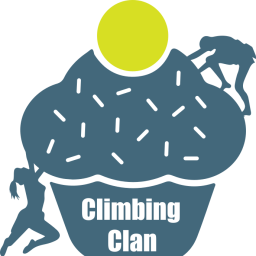

All
Unread
Comments
Follows
Likes
Cross
Time
Today
Cog
Cart
You have a new order! 🎉
New order for £0.00 on The Climbing Clan
Time
Yesterday

The Climbing Clan
is back online!
It was down for 39 minutes.
Time
Older than a week
Cart
You have a new order! 🎉
New order for £25.00 on Migrating Dragons
Trophy
Happy Anniversary with WordPress.com!
Time
Older than a month
Trophy
Congratulations! Your site,
The Climbing Clan
, passed 5,000 all-time views.
Trophy
Happy Anniversary with WordPress.com!
The End